Input grid
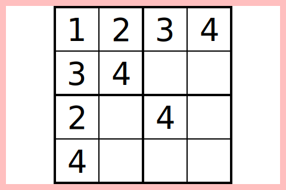
Possible values
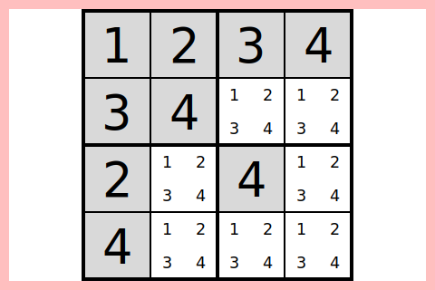
Propagation
0 in (1, 1) has no effect
Propagation from (1, 2)
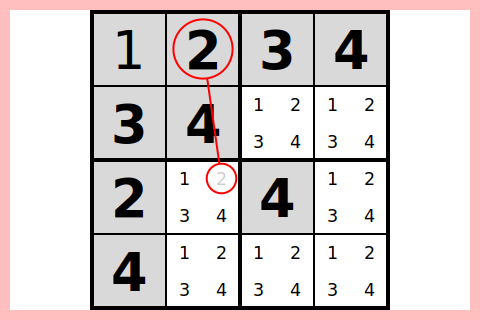
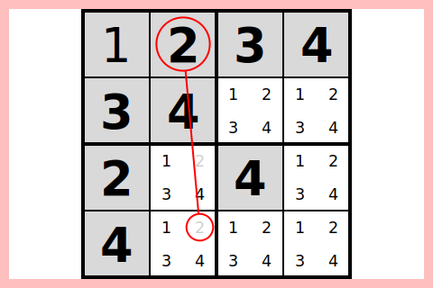
Propagation from (1, 3)
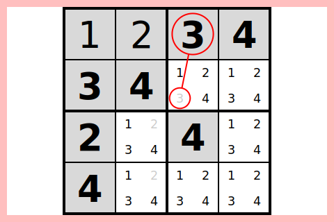
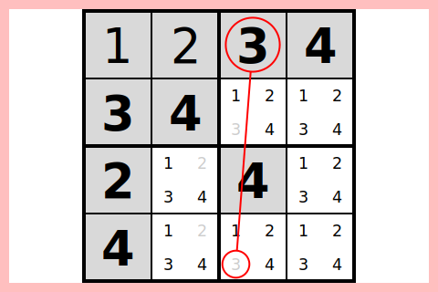
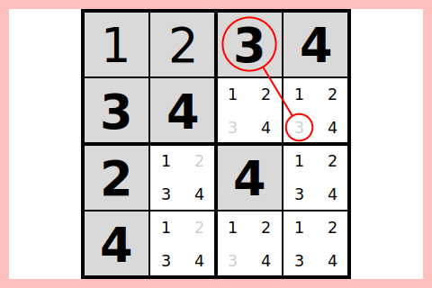
Propagation from (1, 4)
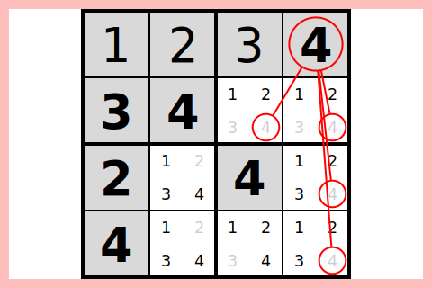
2 in (2, 1) has no effect
Propagation from (2, 2)
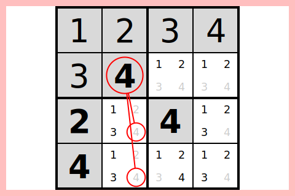
Propagation from (3, 1)
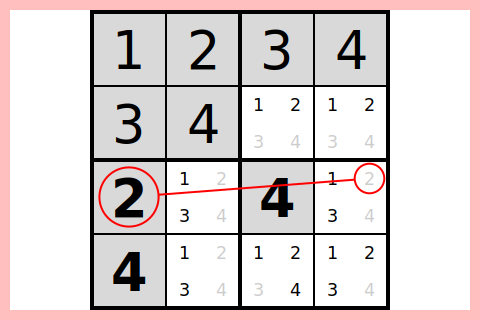
Propagation from (3, 3)
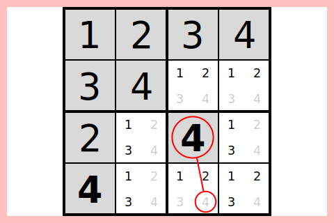
3 in (4, 1) has no effect
Exploration for (2, 3)
Trying 1 for (2, 3)
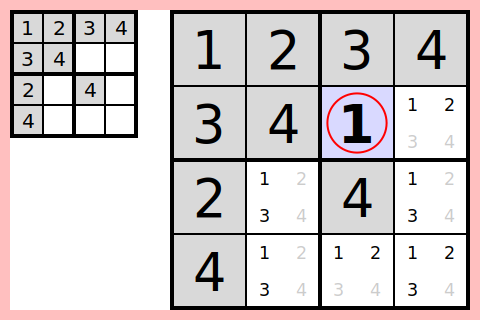
Propagation
Propagation from (2, 3)
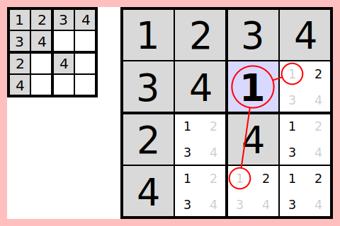
(2, 4) can be deduced because it only has one possible value (2):
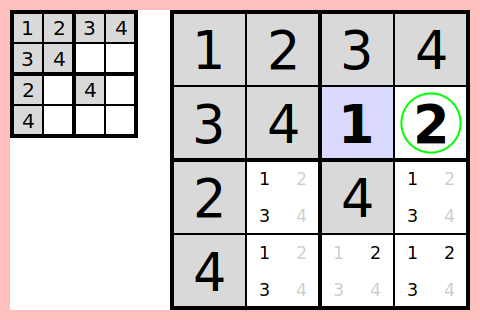
(4, 3) can be deduced because it only has one possible value (2):
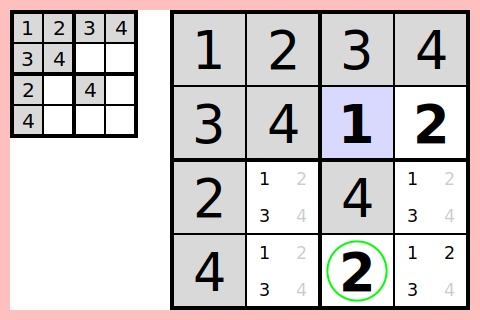
Propagation from (2, 4)
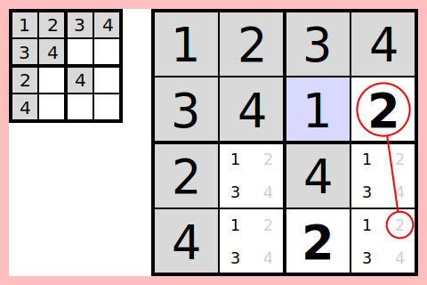
1 in (4, 3) has no effect
Exploration for (3, 2)
Trying 1 for (3, 2)
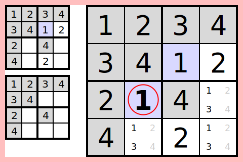
Propagation
Propagation from (3, 2)
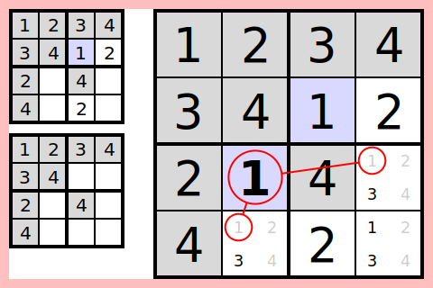
(3, 4) can be deduced because it only has one possible value (3):
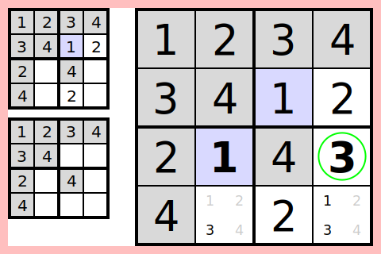
(4, 2) can be deduced because it only has one possible value (3):
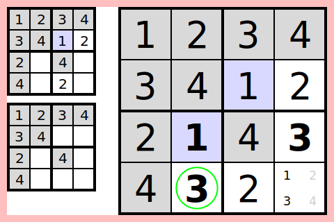
(4, 4) can be deduced because it's the only place for 1 in region 8:
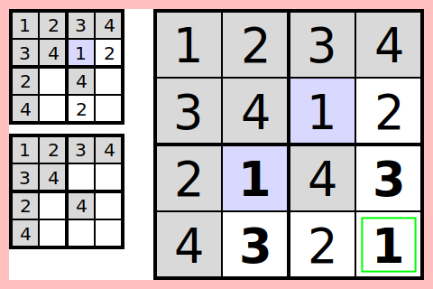
Solved grid
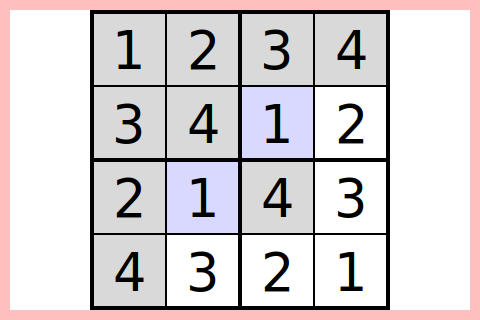
2 in (3, 4) has no effect
0 in (4, 4) has no effect
2 in (4, 2) has no effect